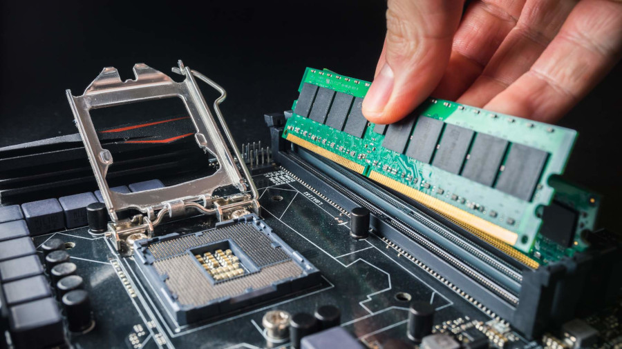
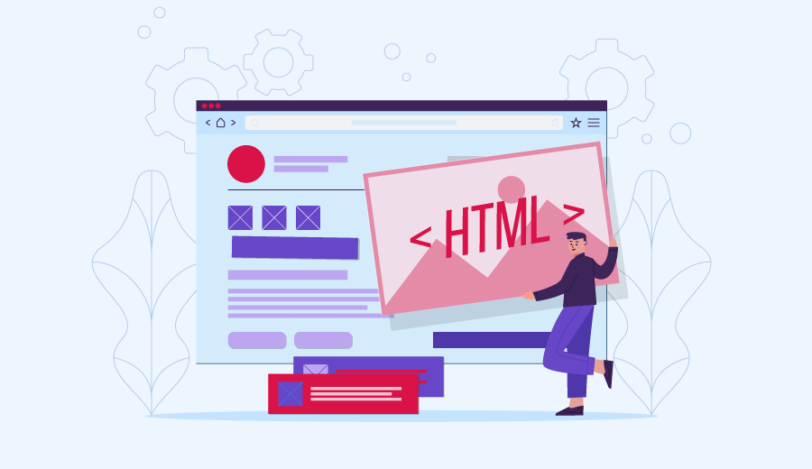
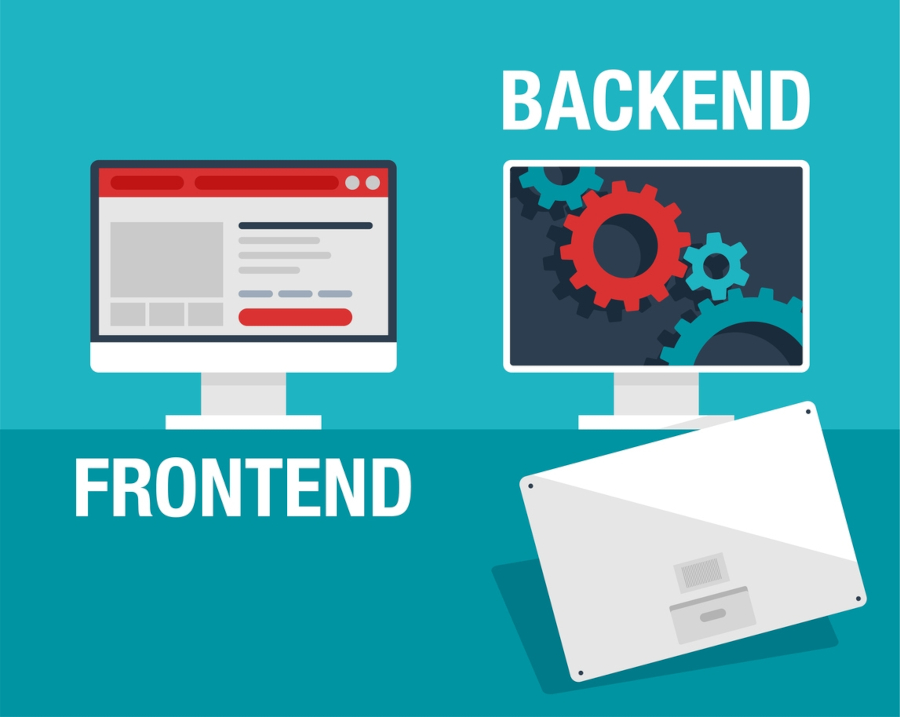
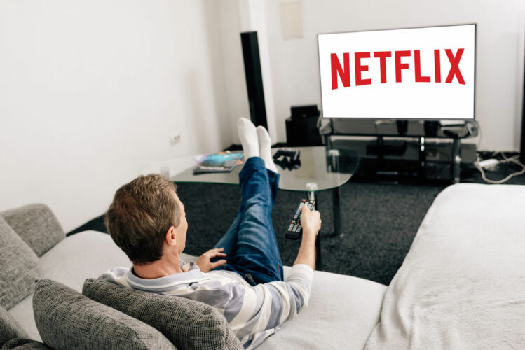

Sobre Mim
Olá, meu nome é Vinicius e atualmente estou cursando Análise de Sistemas. Tenho uma grande paixão por explorar novas tecnologias e expandir meu conhecimento na área. Um dos marcos mais significativos para mim foi a montagem do meu primeiro computador em 2022. O projeto começou como um simples desejo de melhorar minha experiência de jogo, mas rapidamente evoluiu para algo muito mais significativo. Depois de pesquisar e escolher cuidadosamente cada componente de hardware e o sistema operacional, finalmente consegui montar o computador, o que não só satisfazia meu sonho inicial, mas também me proporcionou uma profunda satisfação ao ver o projeto ganhar vida.

Até agora, tive a oportunidade de aprender o básico de HTML e CSS, além de cursar disciplinas importantes como banco de dados e matemática aplicada à computação. Essas experiências me proporcionaram uma base sólida em desenvolvimento web e em gerenciamento de dados. Atualmente, trabalho em um supermercado, mas estou buscando uma transição para uma área mais alinhada com meus interesses e habilidades adquiridas. Estou motivado a mudar de carreira para poder aplicar meus conhecimentos em tecnologia e desenvolvimento, e assim, explorar novas oportunidades que me permitam crescer profissionalmente e contribuir de maneira mais significativa.

Inicialmente, meu interesse estava voltado para o front-end, onde me fascinava a criação e o design de interfaces de usuário. No entanto, ao explorar outras disciplinas durante meu curso, descobri uma nova paixão pelo back-end. A parte de desenvolvimento que lida com a lógica de servidores e o gerenciamento de dados me cativou profundamente. Em particular, a disciplina de banco de dados despertou meu entusiasmo, pois me permitiu entender a complexidade envolvida na organização e manipulação de dados em servidores. Essa nova perspectiva tem me motivado a aprofundar meus conhecimentos e habilidades na área de back-end, onde vejo um potencial significativo para resolver problemas complexos e construir soluções robustas.

Meus hobbies refletem uma combinação de interesses que trazem diversão e equilíbrio para minha vida. Adoro jogar, pois me permite explorar novos mundos e desafios, além de me conectar com amigos e conhecer pessoas com interesses semelhantes. Assistir filmes é uma forma de escapismo e também uma maneira de apreciar a arte e a narrativa de diferentes culturas e épocas. Ouvir música é essencial para mim; as melodias e letras têm o poder de elevar meu humor e me inspirar. Finalmente, correr me proporciona uma sensação de liberdade e bem-estar, ajudando-me a manter a forma física e a clareza mental. Cada um desses hobbies contribui para minha felicidade e desenvolvimento pessoal de maneiras únicas.
